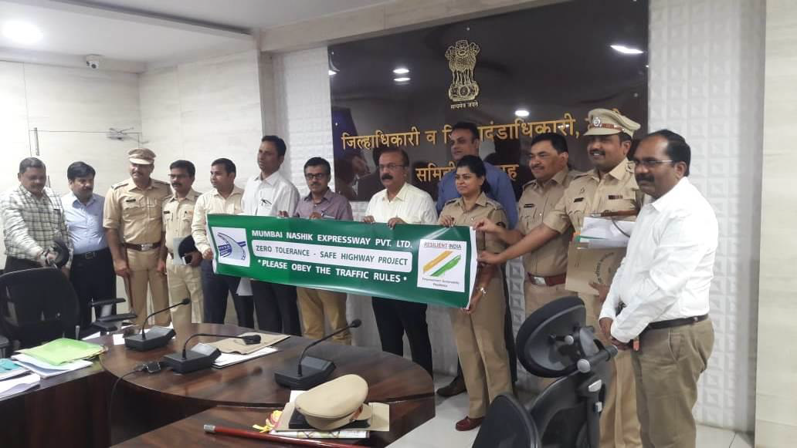

- Geological related Disasters.
- Medical Related Disasters.
- Terrorist related Disasters.
- Water and climatic Related disasters
- Chemical, environmental, industrial related Disasters. Disaster related to pollution, deforestation and wild life.
- Accident related disasters
